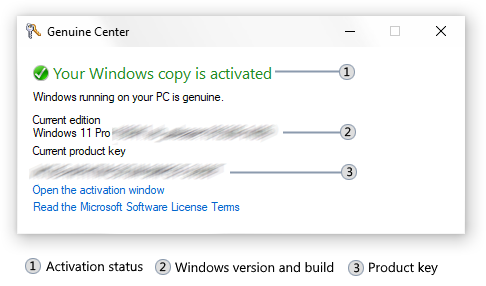

Genuine Center is an appletAn applet is a component of a program that performs a function or a set of functions related to the same field. that allows you to see the activationAn activation is a component of Windows that ensures you have a valid operating system license. Windows can be activated either by Internet or by telephone. Absence of activation results in several Windows features (e.g. personalisation) being unusable. status and see full product keyA product key is a sequence of 25 letters and numbers divided into five equal parts. It is used as your Windows license and is usually asked for during the operating system setup process. However, additional Internet or phone activation is required after that to make your Windows fully genuine. of your Windows copy.
|  |
|
Genuine Center. Product key and build number are blurred in this image.
|
The activation status of your Windows copy is shown by the activation status label at the top. When the system is activated, a green tick icon is shown and the text is green in color. If the system is not genuine, the icon will be a red X and the text will be red. If the product key exists, it will be shown below, as well as your system's version and build number.
No, Ultimate Control does not provide any ways to circumvent official activation services. Any non-official key management services or activators violate the Windows EULAAn End-User License Agreement (EULA) is a digital agreement that any user is obliged to follow when using a software or a web service. Violation of the license agreement can lead to real-life legal consequences.. To open the official activation program, click the "Open the activation Window" link in the applet. You can also read the EULA by clicking the "Read the Microsoft License Terms" link.